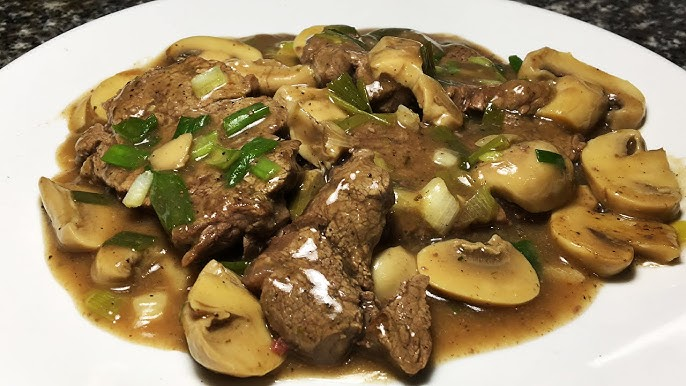

Home
Grilled Ribeye Steak with Mushroom Sauce

Description
This Argentine-style ribeye steak, known as bife de chorizo, is juicy, tender,
and full of flavor. Served with a creamy mushroom sauce, it’s a restaurant-worthy dish
you can easily prepare at home. Perfect for special occasions or a delicious weekend treat.
Ingredients
For the steak:
- 2 ribeye steaks (bife de chorizo, about 300–350 g each)
- Salt and freshly ground black pepper
- 1 tablespoon extra virgin olive oil or butter
For the mushroom sauce:
- 200 g (about 7 oz) mushrooms, sliced (button or cremini)
- 1 tablespoon butter
- 1 garlic clove, minced
- ½ cup heavy cream or cooking cream
- ½ small onion or shallot, finely chopped
- ½ cup white wine or beef broth (optional)
- Salt and pepper to taste
- Fresh parsley (optional, for garnish)
Steps
- Season the steaks generously with salt and pepper. Let them rest at room temperature for 15–20 minutes.
- Heat a skillet or grill pan over high heat. Add olive oil or butter.
- Cook the steaks for about 3–4 minutes per side for medium-rare, or to your preferred doneness. Remove and let them rest.
- In the same pan, melt butter and sauté the onion and garlic until soft.
- Add mushrooms and cook until they release their juices and begin to brown.
- Pour in the wine or broth (if using) and let it reduce slightly.
- Add the cream, season with salt and pepper, and simmer until slightly thickened.
- Serve the steak hot, topped with the mushroom sauce and optional chopped parsley.